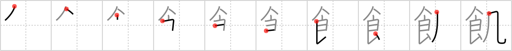

飢
← →
hungry

Reading:
On-Yomi: キ — Kun-Yomi: う.える
Heisig story:
Food . . . wind.
Koohii stories:
1) [aircawn] 21-1-2007(297): The smell of cooked food wafts past you in the wind, making your stomach rumble and feeling hungry.
2) [mcfate] 24-10-2007(67): The wind blew away my food, so now I'm hungry.
3) [fuaburisu] 19-1-2006(36): When you feel the wind (or even hear it) in your stomach, that means you're hungry and you need to eat. Imagine your stomach like an empty, barren desert, and the wind blowing through it.
4) [bihzad] 9-4-2008(14): If all you had to eat was wind, you'd be hungry too.
5) [Tornadic_Indignation] 7-7-2009(11): I was so hungry that I ate my farts.